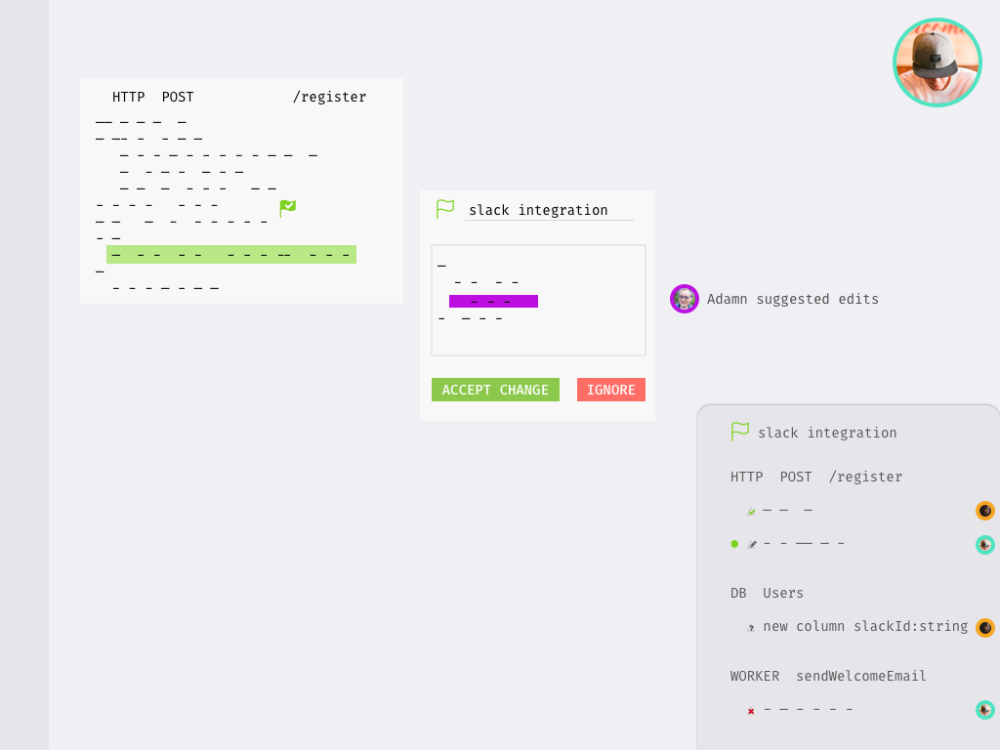

Multiple users will struggle to work on the same project because they don't know who made what changes where and why.
For a New Year's hack day, I explored ideas around the theme of collaboration. What features
can help users communicate and work together on the same codebase.
Let's breakdown it down
For teamwork to be possible in Dark, users need to be able to:
Communicate about their code in the editor.
Learn about the codebase's history.
Make changes to their codebase safely.
Out of scope
Other concerns I thought of but tabled were:
Merge conflicts
Pair-programming
Forking and sharing code
Solving: How do I talk about my code?
Users need to be able to communicate about their code in the editor.
Constraints
Right now the only way for users to add comments in their code is with unassigned strings.
It is a workaround hack; not a language feature
Can we have simply implement comments?
Maybe make # a keyword to create a comment line or block?
But it will violate our founder's language design principle.
How can we allow for users to add comments to their code?
Reflective understanding
People use comments for 2 reasons:
To communicate about a complex chunk of code in a natural language.
To temporarily disable a chunk of code during execution.
Arriving at a solution
Why don't we take page from collaborative document editing software?
Solution
When the user selects a code chunk they can add a comment to it.
They can type in a comment and collapse to hide it.
Collapsed comment will just show as a marker, and be read on click.
Solving: Who wrote this?!
When users are confused about some of the code they are reading, they should be able to find out who
to ask for
help.
With the popular demand for collaboration features, we have the ability to see other users who are on the
same project.
But this feature only shows the user what is happening right now. What if they want to gaze into the
past? How can they do that?
Space Constraints
Can we just keep the avatars there? Even if a users is not active? How can we show that information without
adding more clutter?
Arriving at a solution
Borrowing from image editing software...
What about layers! As we add more features to Dark, we must give affordances for users to
see different things, when performing different tasks. Not everything needs to be on the screen at all once.
Layers help us reduce visual noise and addresses our running out of space problem.
By activating the change log layer, users can see who edit last.
Solving: How do I edit code in chunks?
Users need to be able to make changes to their codebase without affecting their customers
immediately. And they need to package their changes for another to review or deploy.
Arriving at a solution
Feature Flags provide a method
users can change and test out their code, before enabling it for all their users. But as of now, they can only
flag individual chunks of code.
But new features or fixes often span across multiple parts of the codebase.
How can we extend feature flags to group changes together and allow someone to review all changes
associated with the new feature?
To do so it would need to do two things:
Provide support for batching changes under a single feature flag.
Provide support to review the changes in a feature flag
Solution
When the user select a semantically valid code chunk, they can feature flag it!
The code in the feature flag will only execute for fellow teammates who enabled this feature
flag. Their customer will run on the production program.
The name field autocompletes with names of active flags. Or the user can
enter a unique name to create a new feature flag.
Multiple users can make changes to the same feature flag
The feature flag is ready
to go live!
Go live! (Rollout)
Rollout is the proccess in with code in the feature flag replaces existing code. After rollout is
complete the flag becomes inactive
There are several different rollout options:
Gradual rollout
Scheduled rollout
Immediate rollout
Putting it all together
New developer Ryan joins the team and is tasked to update the registration
flow.
Feature Request: After users sign up, send them a slack invite code in their welcome email.
Ryan opens the project's space.
They see Tatianna
wrote most of it.
Tatianna helps Ryan. She shows them how to create a feature flag. They pair together to create a fix.
Ryan adds more changes on top of Tatianna's feature flag
Ryan asks Adam to review the "slack integration" feature flag.
Adam gets a notification about a new feature flag, and goes to review it.
Adam rejects the feature flag, requesting additional changes to Ryan's code.
Ryan makes suggested changes, and ask Adam to look at it again.

Adam finally approves, and sets a rollout plan for midnight on Sunday.
Everyone is delighted and go out for Happy Hour!
Future Considerations
I cut scope on this to get out the best ideas within a day. There are additional considerations that would
be taken into account in the next phases:
Who has permission to review?
How do we reverse or halt the deployment of a feature flag?
Will users want stricter permissions on who can amend to another's feature flag?
What should be the UI for gradual and scheduled rollout?